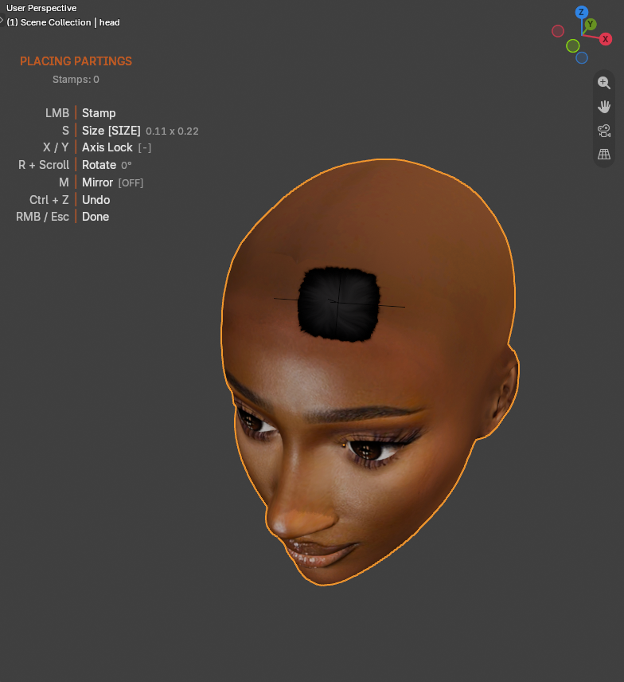

Your First Parting In 10 Minutes¶
Applies to: Parting Placer V2.0.0 · Blender 4.4 · 5.2
Place one parting on a head and bake it to texture maps you can use outside Blender.
You Need First
- The add-on installed. See Install, Update, Uninstall.
- A head mesh with a material and a UV map. See Requirements.
Set Up The Head (Steps 1 To 6 Of 23)¶
- Select your head mesh in the 3D Viewport.
- Press N to open the sidebar.
- Select the Parting Placer tab.
- Set Target to your head mesh.
- Press Z to open the shading menu.
- Select Material Preview.
Partings only show in Material Preview or Rendered shading.
Place A Parting (Steps 7 To 13 Of 23)¶
- Select Place Parting.
- Move the mouse over the head. A preview parting follows the cursor.
- Press S to switch to sizing.
- Scroll to resize the parting.
- Press S again to hand the scroll wheel back to the viewport.
- Left click to place the parting.
- Right click to finish.

A key guide sits in the viewport while you place. It lists each key and keeps the size, rotation and parting count up to date.
Undo While Placing
Press Ctrl+Z while placing to remove the last parting. After you finish, one Ctrl+Z undoes the whole session.
All keys are listed on Place Parting And Placement Keys.
Change Its Colour (Steps 14 To 16 Of 23)¶
- Select your parting in the parting list.
- In the Appearance block, select the Hair Color swatch.
- Pick a colour.
With Link Appearance off, the Appearance heading names the parting you are editing. See Appearance.
Bake And Save (Steps 17 To 23 Of 23)¶
- Select the triangle beside Bake to open the Bake block.
- Set Resolution to 1024.
- Select Bake Partings.
- Wait for the bake to finish.
- Select Save Textures.
- Pick a folder in the file browser.
- Select Save Textures at the bottom right of the file browser.
Normal Resolution keeps its own setting, 4096 by default. How long a bake takes depends on your computer and how many partings you have.
Live Bump starts off, so this bake skips the Normal map. To get one, turn on Live Bump at the bottom of the Appearance block before you bake.
A lower resolution bakes faster while you learn. Raise it for your final pass.
Save Textures writes one PNG per baked map. Each file is named after the object, style, map and size, for example head_Style 1_Partings_Color_1024.png.
If You're Stuck
- No parting showing? See I Cannot See Any Partings.
- Place Parting does nothing? See Place Parting Does Nothing.
- Bake Partings greyed out? See Bake Partings Is Greyed Out Or Refuses.
Recommended next: Place Partings